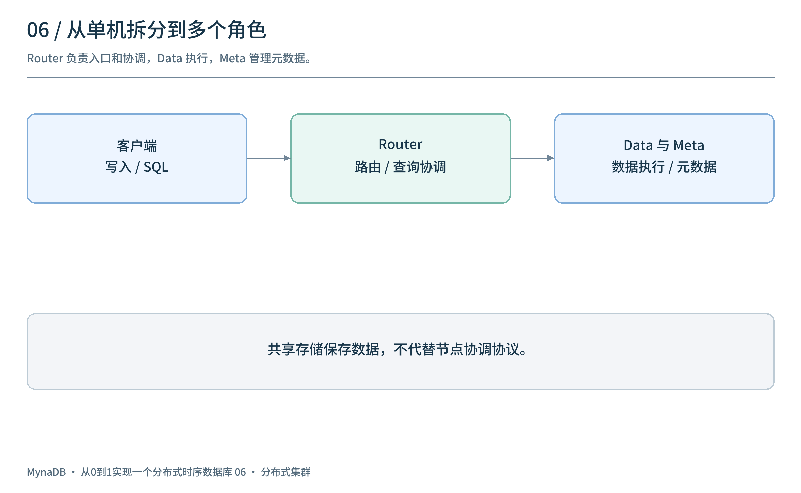
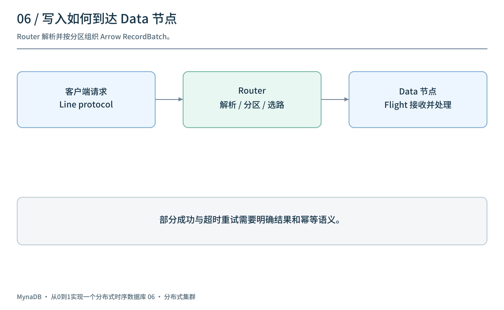
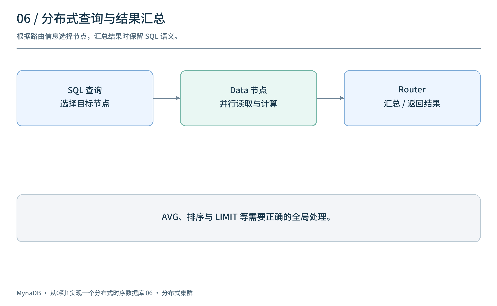
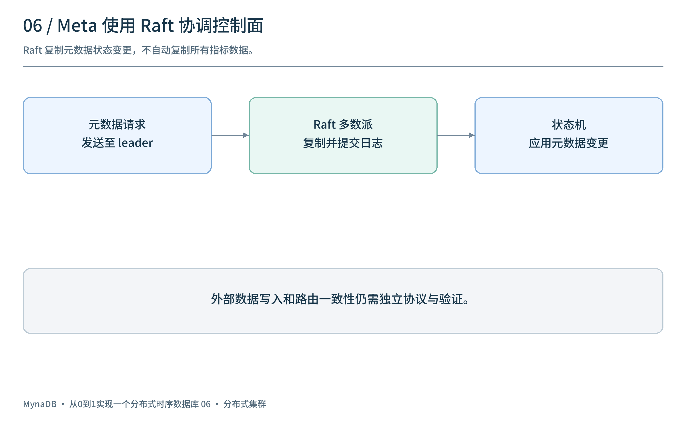
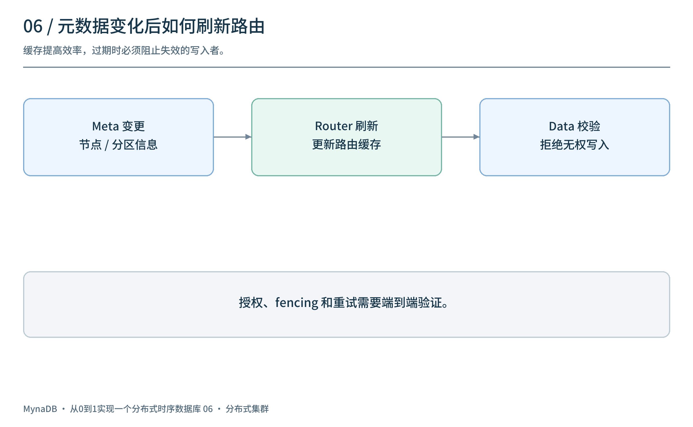
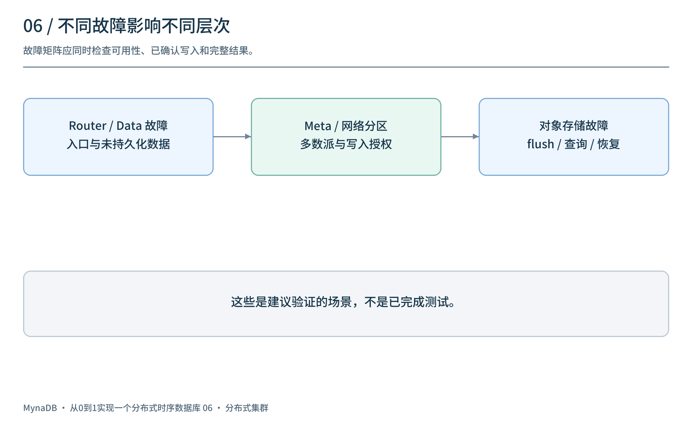

社区文章草稿 · 分布式集群 · 本地预览，尚未对外发表
上一篇让单机查询同时看到内存与 Parquet。如果写入、查询和存储工作需要分布在多台机器上，系统必须回答新的问题：请求发给谁？哪些数据在哪些节点？节点失联后谁来更新路由？
这一篇以 v0.5.0 / M6 为线索，介绍 Router、Data 和 Meta 的分工、Arrow Flight 数据传输以及 Raft 元数据协调。图中的失败处理部分是设计检查项，不代表该历史版本已经证明零停机或无数据丢失。
1. 把单机职责拆开
单机模式将协议、缓存、存储和查询放在同一进程。集群模式把入口、执行和协调拆分成不同角色：

| 角色 |
主要职责 |
| Router |
接收客户端请求、解析与路由写入、协调分布式查询 |
| Data |
接收数据、管理缓存与存储、执行节点侧查询 |
| Meta |
管理节点、分区与路由等元数据，为协调提供控制面 |
| 共享存储 |
保存 Parquet 等对象；不代替节点协调协议 |
v0.5.0 的阶段性架构使用共享存储和节点相关的存储前缀；后续版本又调整了所有权和布局。不能据此假定不同阶段之间可以直接迁移数据。
2. 写入怎样到达 Data 节点？
客户端发送 line protocol 后，Router 解析数据、按分区归组、转换为 Arrow RecordBatch，再通过 Arrow Flight 将批次发送到目标 Data 节点。

客户端 → Router：解析 / 分区 → 路由信息
↓
Flight RecordBatch → Data 节点
↓
缓存 / WAL / 存储
该版本的写入路由包含重试和错误汇总；一个请求可能涉及多个分区。需要清楚地规定：部分节点成功、部分节点失败时，响应代表什么？重试已经成功的分区会不会产生重复？如果网络超时，不能仅根据“没有收到响应”推断写入一定失败。
Arrow Flight 用于节点之间传输 Arrow 数据，但传输完成不自动等于已持久化或已经满足副本确认策略。写入成功的承诺取决于具体路径、配置和测试。
3. 查询为什么需要 fan-out 和汇总？
一条 SQL 可能涉及多个节点上的数据。Router 可以根据可用的元数据和时间范围选择目标节点，向它们并行发起查询，再汇总结果。

对简单扫描，可以组合多路结果；对聚合、排序、限制条数和 join，则不能一概把各节点最终结果直接拼接。例如 AVG 需要正确合并每个节点的 SUM 和 COUNT，而不是对节点平均值再次求平均。SQL 在哪些部分下推、哪些部分在 Router 汇总，必须与实际实现的支持范围一致。
还要处理节点失败：返回错误、重试或返回部分结果是不同的 API 契约。不能静默漏掉一个节点后仍把结果当成完整结果。历史阶段存在文件归属和节点亲和的查询路由路径；不应将此理解为所有 SQL 和故障组合都已经验证。
如果 Router 只保留一份本地路由表，重启或节点变化后就可能失去信息。Meta 服务保存和管理集群所需的元数据；多个 Meta 节点通过 Raft 协调状态。

在 Raft 的常见模型中，客户端将状态变更交给 leader，日志复制到多数派后提交，再由状态机应用；读写细节仍以具体实现和配置为准。v0.5.0 集成 OpenRaft，使用 sled 相关存储组件和元数据状态机。元数据复制的对象是控制面状态，不是自动把每一条时序指标数据复制到所有 Meta 节点。
该开发阶段曾经过 etcd 方案，但它在 v0.5.0 标签端点前被移除；本文讨论该标签的内置 Meta 路径。Raft 本身也不能保证所有外部写入、路由缓存和数据副本已经协调正确，这些需要系统级协议与验证。
5. 路由缓存与失效：控制面变化如何到达数据面？
Router 通常会缓存路由和节点信息，避免每个请求都访问 Meta。但节点状态或分区归属发生变化时，旧缓存可能把请求发往错误节点。

需要明确：
- 元数据如何版本化，Router 如何获得更新或重新拉取。
- 旧路由写入到达节点时，节点如何检查自己仍有权处理。
- Router 如何区分临时超时、过期路由和永久故障。
- 重试使用什么标识，如何处理部分成功。
- 节点或网络恢复后，如何避免旧所有者继续写入。
任期、租约或 fencing token 只有在实际写入路径中被正确验证时才有意义。v0.5.0 包含早期 fencing、副本和 standby 相关机制，但这些设计在后续里程碑继续调整；不能仅凭组件存在就宣称脑裂安全。
6. 数据副本、共享存储与故障恢复
共享对象存储可以让多个节点访问持久化文件，但尚在节点内存或本地 WAL 中的最新写入是否存在其他副本，需要另行讨论。对象存储可用也不能替代 Meta 选主、Data 角色管理和客户端路由。

| 场景 |
需要验证的问题 |
| 一个 Router 故障 |
客户端如何发现其他入口？请求超时后如何重试？ |
| 一个 Data 节点故障 |
尚未持久化的数据在哪里？查询如何处理缺失节点？ |
| Meta leader 故障 |
多数派能否选出新 leader？路由何时更新？ |
| 网络分区 |
哪些节点仍有授权？旧路由和旧写入者如何被拒绝？ |
| 对象存储不可用 |
写入、flush、查询和恢复如何报告错误、限流与重试？ |
| 部分分区写入成功 |
客户端如何判断结果，重复请求会发生什么？ |
测试应记录确认过的写入、缺失与重复、节点角色和路由版本，并分别覆盖进程退出、网络分区与存储错误。这里是建议的故障矩阵，并非已经运行的测试。
7. 回看这一阶段
v0.5.0 将入口、数据执行和元数据协调拆成 Router、Data、Meta，并使用 Arrow Flight 与 Raft 相关组件建立集群基础。与 v0.2.0 已移除的主从原型不同，这是一条新的架构路线。
部署和协议仍有边界：例如该标签的 Router 模式明确没有实现 MySQL 服务；早期 standby、fencing 和缩容机制也在后续调整。下一篇将继续讨论节点恢复、standby 策略和安全缩容。
项目源码：panbooks/mynadb · v0.5.0 源码 · 中文文档。